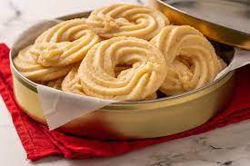
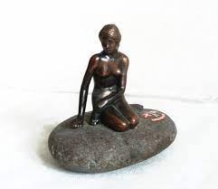
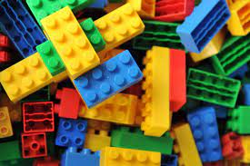

SHOPPING

Butter cookies
You’re probably familiar with that blue tin that contains two layers of delicious Danish butter cookies. And while these cookies are available in other countries, they’re best sampled in their country of origin. Over the past 50 years, they have become part of Danish culture and are one of the best-loved Danish treats. Plus, in Denmark you’ll find the cookies for sale in a wider variety of blue tins, often decorated with paintings of famous Danish scenes, so once you’re done with the tasty delicacies, you can use the tin as a decorative item.

The Little Mermaid
At Copenhagen Souvenir Shop you can find a nice bronze-colored plastic figurine, costing $22, or a porcelain one at $46. The original statue was donated to the City by brewer Carl Jacobsen, son of the founder of Carlsberg beer. The author, sculptor Edvard Eriksen, was inspired by The Little Mermaid fairy tale by Hans Christian Andersen, and used his wife, ballerina Eline Eriksen, as a model.

Georg Jensen Jewelry
One of the most famous and popular Danish jewelry designs is the Georg Jensen Daisy collection. From the flower’s origins, as a national icon during World War 2, the first Daisy was created to commemorate the birth of the present Danish Queen Margrethe II, who was born 16 April 1940. Ever since then it has been associated with the Danish royal family and the Queen herself, of course. Nowadays, the Daisy collection comes in various shapes, colors and styles, and most girls and women in Denmark own a little piece of this beautiful and elegant jewelry collection. The collection comes in various and affordable prices, ranging from $180 to $1,620.

Sømods Bolcher Bonbons
The Danes have a peculiar love of salty liquorice, the flavor you will find in abundance at Sømods Bolchers’ small bonbon shop. Bolcher is "bonbons" in English. Try for instance Dameskrå and Hostebolcher. You can choose from a total of 74 kinds of bonbons there available. A special royal sort and old classic is the red, sweet and fruity Kongen af Danmark (King of Denmark). Another classic bestseller is the rhubarb-flavored Rabarber. If you cannot decide on a flavor, just get a mixed bag. If you have diabetes or, for any other reason, do not want sugar, Sømods Bolcher also has an entire collection of sugar-free bonbons. Prices start at $6 for 100 kilos.

LEGO Toys
Who hasn't, at some point, played with LEGO toy building bricks as a child? The popular Danish plastic construction game was introduced in 1947 by its founder Ole Kirk Christiansen. The name LEGO comes from the Danish words leg godt, which means "play well". The original toy building bricks were just the start. Later, in 1969, came Duplo building bricks, a series of simple blocks twice as big as the original and aimed at young children. LEGO also produces plastic figures, merchandise and themed sets often with a macho theme, like Star Wars, Indiana Jones, Toy Story, Batman, Cars, Pirates of the Caribbean, Avatar, Spider Man and so on. The brand has a massive following and subculture of movies, games, magazines, clothing line and, of course, theme parks. The original LEGOLAND is located in the town of Billund in Denmark. LEGO toys come in many variations from only $5 apiece. In Copenhagen, you can enter the world of LEGO in their brand new flagship store.
SHOPPING PLACES
Stroget
Stroget is Copenhagen’s iconic shopping area, and with its 0.7 miles in length, it is actually Europe’s longest walking street. The street extends more or less in a straight line from the City Hall Square (Rådhuspladsen), past the famous Storkespringvand fountain to Kongens Nytorv, where you can find The Royal Theatre, Magasin and the beautifully-decorated hotel D’Angleterre. Along Strøget, you can find everything from women’s and men’s clothes shops, souvenir shops, jewellery shops and toy chains to ice cream bars, pancake houses, restaurants, cafés and bars. You will find international brands like Prada, Max Mara and Louis Vuitton as well as more budget-friendly stores like H&M, Vero Moda and Zara. At Christmas, the beautiful lights of the walking street add to the Christmas spirit, and they are definitely worth a look!
Leaderstraede
Leaderstræde is a cosy street in inner Copenhagen, behind Gammel Strand. The street was originally a dock road, but today it is home to lots of small and peculiar shops selling hand-made jewellery, ceramics and so on. Here, you can also find charming book stores, lovely dress shops and Danish interior design. Læderstræde is particularly known for this cosy street environment, where you can also find various cafés and eateries and sit at a small table-and-chair set on the street enjoying a warm cup of coffee or a light meal.
Fisketorvet
Fisketorvet is one of Denmark’s largest shopping centres, and it is located on the waterfront at Kalvebod Brygge. The centre is home to around 120 shops, restaurants and cafés plus Copenhagen’s largest cinema, which shows popular movies on Scandinavia’s largest screen. At the shops, you can find everything from fashion clothing and shoes to electronics and toys. Should you get hungry after walking up and down the halls of the large shopping centre, you can sit down at one of the many restaurants or cafés, which offer everything from sushi and Thai food to burgers and pizza.
Copenhagen Designer Outlet
Copenhagen Designer Outlet is a whole shopping centre with designer clothing and other designer products at fantastic low prices. The centre is home to 67 international and Danish brand stores, in an area totalling 188,300 square feet. It is easy to make a great find at this outlet centre, where you can save anywhere between 30% and 70% on the suggested retail price at great stores like Nike Factory Store, Booztlet, Gant, Kings & Queens and many more.
The Latin Quarter
The Latin Quarter is a charming area in Copenhagen, which goes by the less charming nickname “Pisserenden”. The Piss Trench (Pisserenden) is the popular name for the old part of Nørre Kvarter in the Inner City. In this colourful quarter, you can find a large number of niche shops, where you can buy socks with patterns and clothes in bright colours, which you didn’t even know you needed. You will also find lots of second hand and vintage shops, which offer an entirely different shopping experience than your normal DanChurchSocial (Kirkens Korshær) store. If you are a bit of a nerd when it comes to music, comics or role playing, you can find small shops in the Latin Quarter with original comics, records and role playing equipment.